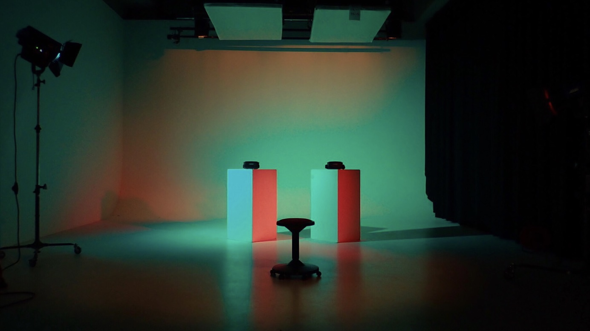

Concept
マインドマップで出てきた地元というワードから山と川に囲まれた私の自然豊かな家から見ることができる星をイメージしたデジタルアートを考えました。 自分で作曲したミニマルミュージックの一音一音を、星をイメージしたオブジェクトに乗せることで鑑賞者の動きによって聞こえ方が変わり、オブジェクトの色によって楽器が変わります。 老若男女様々な方に見ていただくかもしれないということだったので、派手すぎない音と映像で自分から動いて作品を楽しみたくなるようなデザインにしました。
About this work
大学に入って初めて作る作品だったため先輩にコンセプトやコーディングのチェックをしていただきながらを手探りで作った作品。
学内の自主作品展示会に作品を出し、学生だけでなく外部の方々にも体験していただきました。初めてVR体験をしたという方も見え、綺麗だったという意見をたくさんいただき作品意欲のモチベーションに繋がりました。
この作品制作を経て、自分のイメージした物を体験という形で表し鑑賞者の動きにフィードバックをし、鑑賞者が作品の一つになるインスタレーションというものに強く惹かれました。
Pictures
